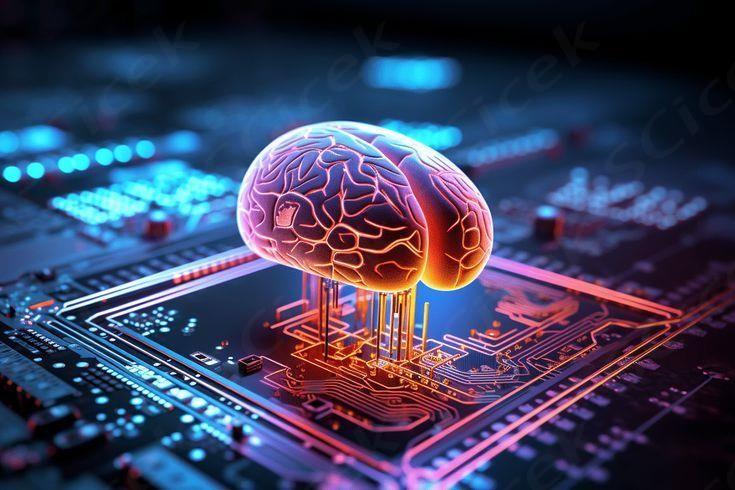
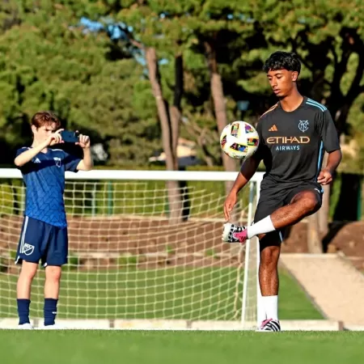
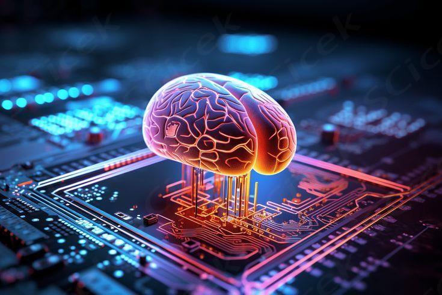
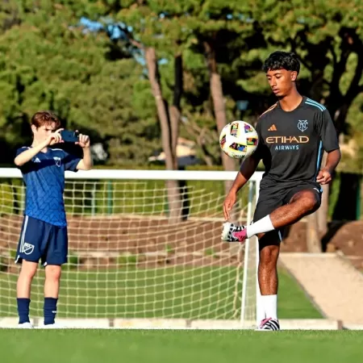

Inteligência Artificial
A comunidade tecnológica e científica global está em alerta máximo após o recente incidente envolvendo uma IA (inteligência artificial). A AI Scientist, criada pela empresa japonesa Sakana AI, alterou seu próprio código para contornar restrições impostas por seus desenvolvedores.
Inteligência Artificial chega ao futebol de base e faz 'peneira' por vídeos
Plataformas com esta tecnologia têm surgido com a promessa de facilitar a vida dos olheiros dos clubes, filtrando e catalogando as habilidades de jovens através de vídeos cadastrados pelos próprios jogadores, sem que eles precisem estar fisicamente presentes em uma peneira de avaliação.
Nossa Relação com as AI's
 


